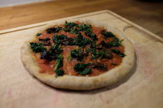
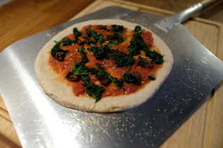
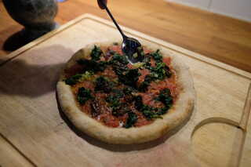

Gesunde Rezepte für Sauerteigbrot und Weiteres
Gute Pizza braucht Zeit. Je länger ein Pizzateig ruht, desto intensiver ist der Geschmack und desto besser geht der Teig im Ofen auf. Gute Pizza braucht außerdem sehr viel Hitze. Wer einen Holz- oder Pizzaofen hat, ist zu beneiden; denn in diesen kann Pizza in 90 Sekunden gebacken werden und ist dementsprechend super saftig, weder Zutaten noch Teig haben Zeit, auszutrocknen, außerdem wird die Pizza dann von unten knusprig und bekommt von oben das berühmte Leopartenmuster, das man von der Pizza des Lieblingsitalieners kennt. Leider haben die meisten keinen Pizzaofen, aber man kann sich ganz gut mit einem Pizzastahl oder -stein aushelfen.
Im Gegensatz zu klassischen Pizzarezepten besteht dieses Pizzarezept zu zwei Dritteln aus Vollkornmehl und wird dazu noch mit Sauerteig gelockert.
Das Rezept ist für 4 kleine oder 3 große Pizzen ausgelegt und reicht für 3 Personen.
Das Rezept ist sehr flexibel. Angegebene Kühlschrankzeiten sind als Mindestzeiten zu verstehen und können auf bis zu 24 Stunden verlängert werden, vorrausgesetzt der Kühlschrank ist auf etwa 3-5 Grad eingestellt. Spätestens 24 Stunden vor dem geplanten Verzehr sollte der Teig angefangen werden. Hier sollte der Sauerteig reif und in ausreichender Menge bereit sein.
Mit einer Küchenmaschine alle Zutaten 5-10 Minuten zu einem mittelfesten Teig kneten.
Den Teig mit den Händen zu einer Kugel formen und an einem warmen Ort 2-3 Stunden gehen lassen, dabei 2 mal falten. Das Volumen sollte sich um etwa 50% vergrößern.
Den Teig abgedeckt mindestens 2 Stunden in den Kühlschrank stellen, z.B. über Nacht.
Nach der kalten Stockgare den Teig vorsichtig auf eine Arbeitsfläche geben und in 4 gleichgroße Stücke aufteilen. Jedes Stück zu einer straffen Kugel formen.
Nun die Kugeln entweder separat in kleine, mit Olivenöl eingepinselte Schüsseln geben oder in eine gemeinsame flache Schale, z.B. eine Auflaufform mit etwas Abstand legen. In zweitem Fall die Form und die Teiglinge gut einölen, damit später nichts klebt.
Die Schüsseln oder die Form abgedeckt 3 Stunden bei Raumtemperatur aufgehen lassen. Danach mindestens 2 Stunden im Kühlschrank gehen lassen.
Wir backen Pizza immer auf dem Pizzastahl. Dies ist einfach ein 1cm dickes und 30x30 cm großes Stück Stahl. Alternativ eignet sich ein Pizzastein auch sehr gut. Dieser wird aber nicht so heißs wie ein Stahl und kann Wärme weniger gut speichern. Die Unterlage der Wahl nun in die oberste Schiene im Ofen platzieren.
Den Ofen reichtzeitig, also eine Stunde vor dem Backen, auf 250 Grad aufheizen. Wenn die Grillfunktion besser ist als die Oberhitze, dann die Grillstufe verwenden.
Pizza braucht unserer Meinung nach keinen (veganen) Käse, denn dieser überdeckt nur den Geschmack der guten Zutaten, die man auf die Pizza legt.
Für die Zubereitung einer Pizza ein Teigling vorsichtig aus der Schüssel lösen und auf eine bemehlte Arbeitsfläche geben. Mit den Fingerspitzen von der Mitte aus flach drücken, sodass ein 1 c breiter Rand bleibt. Weiter flach drücken, bis die Handfläche auf den Teig passen. Dann (mit reichlich Bemehlung) die Hände flach auf den Teigling legen und mit drehenden Bewegungen breit dehnen, bis die gewünschte Größe und Dicke erreicht ist (etwa 25 cm bei 4 Pizzen). Dabei immer darauf achten, dass der Rand nicht flach gedrückt wird.
Den Teig vorsichtig auf einen mit Grieß bestreuten Pizzaschieber legen. Mit Tomatensoße bestreichen und mit Tomaten und Spinat belegen.
Nun die Pizza vorsichtig in den heißen Ofen auf den Stahl schieben, das erfordert etwas Geschick. Wichtig ist, dass der Pizzaboden nicht klebt.
Die Pizza braucht auf einem Stahl etwa 5-7 Minuten.
Nach dem Backen sofort mit einem TL Knoblauchöl beträufeln.
Tipp: während eine Pizza abkühlt, die nächste vorbereiten und backen.
 